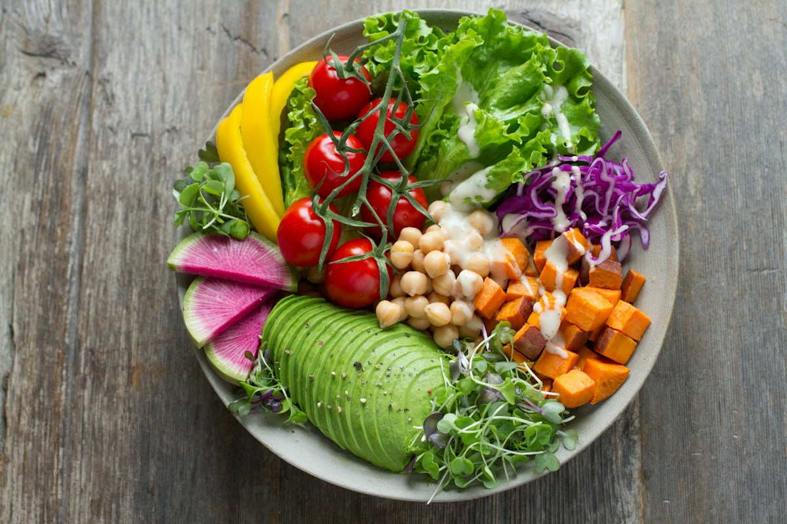
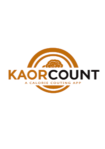

Registro de Refeições
Adicione os alimentos do seu dia e acompanhe calorias e macronutrientes, com um perfil adaptado às suas metas.
Somos a Keenko, uma HealthTech brasileira que conecta tecnologia e bem-estar. Com o KaorCount, acompanhar refeições, hidratação e progresso fica mais simples.
Baixar o KaorCountPara Android · download direto do APK


Conheça o primeiro aplicativo da Keenko. O essencial para organizar a rotina nutricional, sem termos difíceis ou burocracia.
Adicione os alimentos do seu dia e acompanhe calorias e macronutrientes, com um perfil adaptado às suas metas.
Registre o consumo de água e conte com lembretes, com sua rotina e suas metas diárias em uma tela intuitiva.
Visualize a evolução de peso e nutrientes em gráficos e consulte seu histórico para entender seus hábitos.
Fundada em , a Keenko é uma HealthTech brasileira que nasceu para transformar a relação das pessoas com o bem-estar através da tecnologia.
Nosso objetivo é tornar o cuidado com o corpo acessível, simples e prático. O KaorCount é o primeiro passo dessa jornada: um aplicativo de nutrição pensado para a vida real.
Democratizar o acesso a uma vida saudável, devolvendo às pessoas autonomia sobre sua rotina nutricional com soluções simples, práticas e acessíveis.
Tornar-nos uma referência nacional em alimentação e bem-estar mediados pela tecnologia.
Autonomia do usuário, precisão científica, simplicidade sem burocracia, democratização da saúde e personalização real.
Mais clareza para conhecer o KaorCount e dar o próximo passo.
Acesse a página de download para baixar o APK Android e consultar as instruções de instalação. Não há instalador para iPhone ou iPad disponível nesta página.
Para quem quer organizar a alimentação, acompanhar a hidratação e entender seu progresso, seja buscando emagrecimento, ganho de massa ou mais consciência sobre os próprios hábitos.
Não. O KaorCount é uma ferramenta de organização e acompanhamento, não um serviço de consulta. Decisões sobre sua saúde devem ser discutidas com um profissional qualificado.